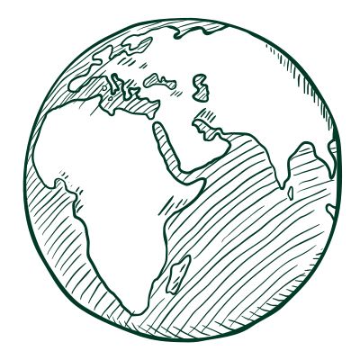
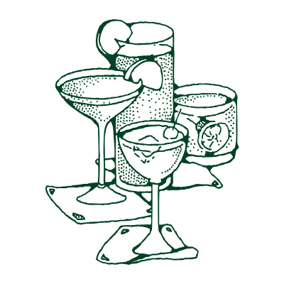
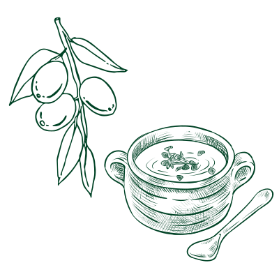
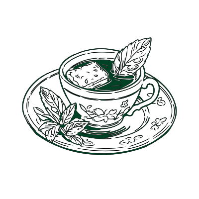

Nausea
Explore those cultural home remedies to see how nausea can be treated differently.

×
Mexico: Lemon Lime Drink with Pink Himalayan Salt
Lemon lime drinks with pink Himalayan salt are a non-alcoholic drink in some Mexican households. It is refreshing and can be easily made. It helps with the symptoms of morning sickness.
Ingredients:
- Mineral Water
- Nugget Ice
- 3/4 lemon of lime
- Pink himalayan salt
Steps:
- Prepare a glass of mineral water.
- Add the lemon juice to the water.
- Sweeten the water with some nugget ice.
- Mix and add the pink himalayan salt.

×
China: Apple, Hawthorn, and Jujube Soup
Apple, hawthorn, and jujube soup is a nourishing tonic in traditional Chinese medicine for better digestive health and stimulates digestive enzymes, while the jujube helps ease the gut. The ingredients are easy to buy at the local grocery store.
Ingredients:
- An apple
- Hawthorn
- Jujube
- Water
Steps:
- Peel the apple.
- Cut the apple into slices.
- Cut the hawthorn and jujube into small pieces as well.
- Mix them with a bowl of water and pour it in a sauce pot.
- Boil the water for 20 minutes, enjoy the soup!

×
Arabic Culture: Mint Tea
Mint tea is a refreshing drink in Arabic culture, especially in the Greater Maghreb region (Morocco, Algeria, Tunisia, Libya, and Mauritania), for comforting the stomach. The mint functions to calm and cool the belly and relieve nausea symptoms.
Ingredients:
- Water
- Fresh mint
- Black tea
Steps:
- Bring six cups of water to a boil in a pot.
- Add two teaspoons of loose-leaf black tea to the boiling water and stir.
- Let the tea boil for one minute to better release the flavor.
- After the tea is boiled, add a handful of fresh mint to the water.
- Cover the pot and let the tea rest for 5 minutes.
- Add some sugar for sweetening(Optional).
